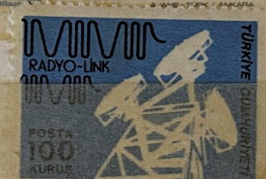
| SOURCE | TITLE| IMAGE MATCH | click to source page |
| eBay | USSR, 1972, Vintage QSL Card - Radio Amateur | eBay | 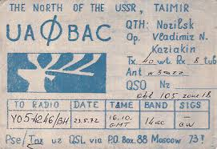 |
| World Radio History | Santer addresses music's concerns | 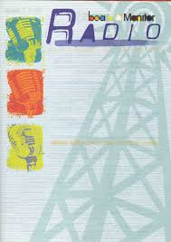 |
| eBay | Ham Radio QSL QSO Postcard UW3WZ, Kursk, USSR | eBay | 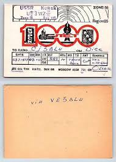 |
| eBay | OLD VINTAGE UA3AEDBK USSR MOSCOW RUSSIA AMATEUR RADIO QSL CARD | eBay | 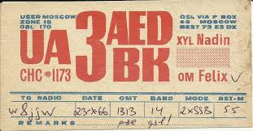 |
| Colorado State University | Amateur (Ham) Radio | 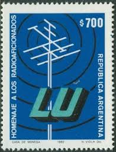 |
| eBay | QSL 1941 Northampton MA radio card | eBay | 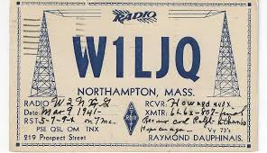 |
| eBay | Ham Radio QSL QSO Postcard UA3WBA, Kursk, Russia, USSR | eBay | 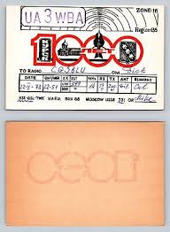 |
| eBay | QSL 1939 Tunbridge Wells Kent England radio card | eBay | 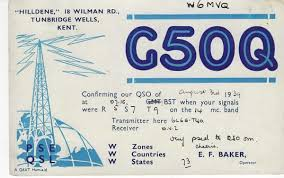 |
| eBay | North Pole Radio Station | eBay | 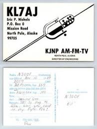 |
| Fandom | KTRS | Logopedia | Fandom | 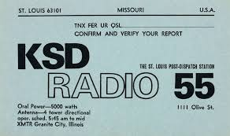 |
| eBay | Ham Radio QSL QSO Postcard DJ4TV, Munich, Bavaria, Germany | eBay | 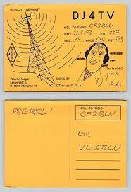 |
| eBay | Multi-Color Radio Latin American Stamps for sale | eBay | 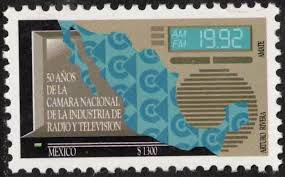 |
| eBay | Cancelled to Order/CTO Postage Science & Technology Postal Stamps for sale | eBay | 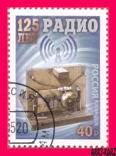 |
| eBay | VINTAGE..T-34 ENGINE "5-ENGINED B-17 299Z" ..ORIGINAL SALES ADS...RARE! (309M) | eBay | 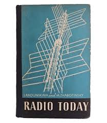 |
| eBay | Ham Radio QSL QSO Postcard UA3WAU, Kursk, Russia, USSR | eBay | 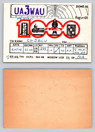 |
| eBay | Vintage Ham Radio CB Amateur QSL QSO Postcard HB4FE Switzerland 1955 | eBay | 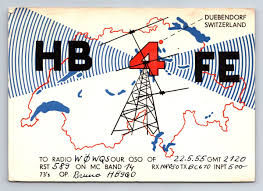 |
| WordPress.com | In the beginning: The Tiger (BBC, 1936) | SCREEN PLAYS | 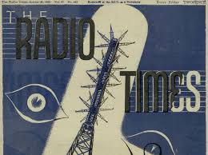 |
| bruender.de | QSL CJCB Sydney Nova Scotia | 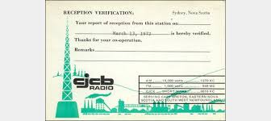 |
| Khalkedon Rare Books | RADIO IN TURKEY / COMPLETE RUN OF THE FIRST MODERN TURKISH PERIODICAL – Khalkedon Rare Books | 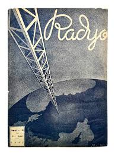 |
| eBay | QSL 1938 North Bennington Vermont radio card | eBay | 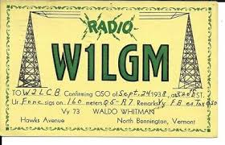 |
| nn8l.com | NN8L's Home Page. Amateur Radio Magic Woodworking | 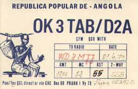 |
| Vintage Radio Station | 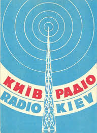 | |
| eBay | QSL 1957 East Germany radio card | eBay | 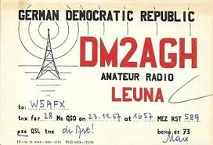 |
| eBay | UN - NY+GEN+VIE . 2013 U. N. Radio . Jumbo FDC | eBay | 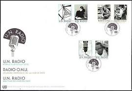 |
| Internet Archive | KPFK folio : KPFK (Radio station : Los Angeles, Calif.) : Free Download, Borrow, and Streaming : Internet Archive | 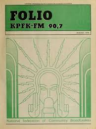 |
| Quarter Century Wireless Association (QCWA) | Richard C. 'Dick' Spenceley - KV4AA - Silent Key | 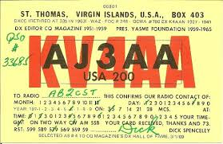 |
| eBay | Vintage Ham Radio Amateur QSL QSO Postcard UD6DFK Moscow USSR 1979 | eBay | 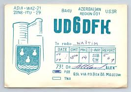 |
| eBay | QSL 1947 Leningrad Russia USSR radio card | eBay | 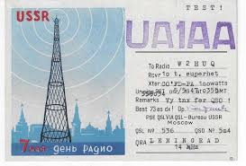 |
| eBay | Ham Radio QSL QSO Postcard OK3CFF, Liptovský Hrádok, Slovakia, Czechoslovakia | eBay | 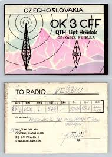 |
| eBay | Ham Radio QSL QSO Postcard CG3BLU, Cherkessk, Kraj, Russia | eBay | 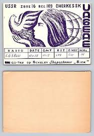 |
| Blogger.com | Random radio jottings: The Not So Famous Five | 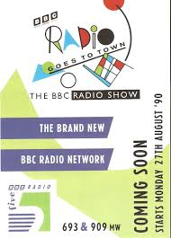 |
| HipPostcard | 3182342 RUSSIA USSR Prokopevsko radiomap 1959 QSL card RADIO | Topics - QSL Cards - Radio, Postcard / HipPostcard | 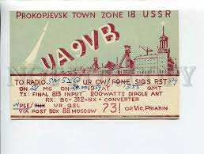 |
| eBay | QSL 1941 Boley Oklahoma CCC Camp 2830 radio card | eBay | 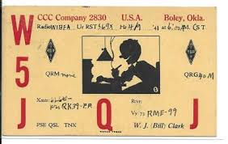 |
| eBay | Ham Radio QSL QSO Postcard UA2DK, Kaliningrad, Oblast, USSR | eBay | 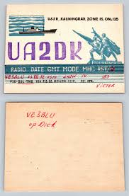 |
| ARRL | November 2021 Maine Telegraph Newsletter | 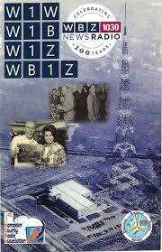 |
| radio prague | 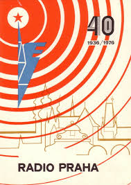 | |
| eBay | 1947 Cunard Marine Radiogram Aboard Queen Elizabeth Ship | eBay | 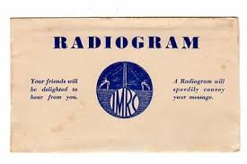 |
| eBay | Ham Radio QSL QSO Postcard I3OBO, Verona, Italy | eBay | 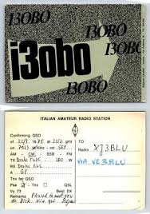 |
| schoechi.de | Martin personal BC-DX Radio-QSLs | 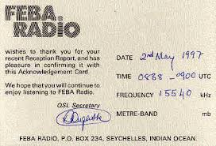 |
| AbeBooks | Rado. Nr.8, serpen 1934: (1934) Magazine / Periodical | ISIA Media Verlag UG | Bukinist | 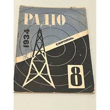 |
| n1wq.com | Oldies from Pskov | N1WQ Amateur Radio Station | 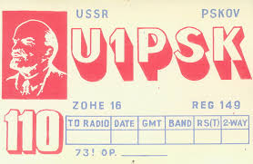 |
| Frank P Barrow was my all-time favorite DJ in Seattle. A consummate professional who brought wisdom and class to KYAC in the mid-to-late 60s, as well as solid soul on that best-of-black | 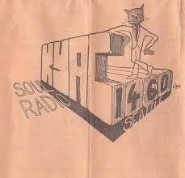 | |
| eBay | USSR, 1972, Vintage QSL Card - Radio Amateur | eBay | 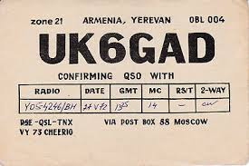 |
| The SWLing Post | The SWLing Post | Shortwave listening and everything radio including reviews, broadcasting, ham radio, field operation, DXing, maker kits, travel, emergency gear, events, and more | Page 782 | 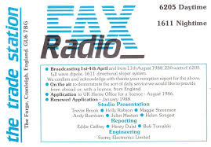 |
| tomread.co.uk | Seychelles | 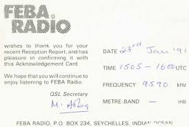 |
| eBay | AOP) Yugoslavia lot of vintage QSL Radio cards (29) | eBay | 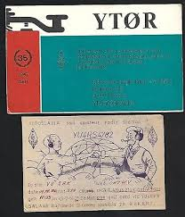 |
| QRZ.com | KI5WW - Callsign Lookup by QRZ Ham Radio | 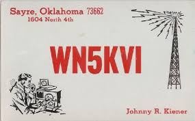 |
| eBay | QSL CB Radio CARD"OK2PAE,Adik Polak,69,Sketch of Tower...",Czechoslovakia(Q6296) | eBay | 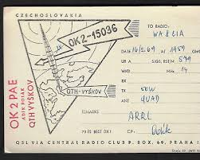 |
| garlinger.com | QSL SHORTWAVE CARDS | 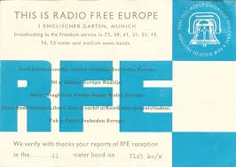 |
| eBay UK | 1940s Radio Collectable QSL Cards for sale | eBay UK | |
| eBay | QSL AMATEUR RADIO CARD – 1981 - DONETSK, UKRAINE, USSR – COLD WAR ERA CARD | eBay | |
| eBay | Ham Radio QSL QSO Postcard YU2WK, Opatija, Primorje-Gorski Kotar, Yugoslavia | eBay | |
| E-Yearbook.com | Ripon College - Crimson Yearbook (Ripon, WI), Class of 1983, Page 111 of 136 | |
| San Antonio Radio Memories | Bud Little | |
| eBay | QSL 1948 Kazan City Russia radio card | eBay | |
| Mixcloud | Cosmic C 43 Lato A+B 1981 by Vagabond Mix | Mixcloud | |
| eBay | Ham Radio QSL QSO Postcard UA3EZ, Orel, USSR | eBay | |
| Radio Heritage Foundation | Radio Heritage Foundation - Radio History - Undercover Radio | |
| UTILITYRADIO! | SUI-63 | |
| eBay | OLD VINTAGE G3HHT HENLOW BEDFORDSHIRE ENGLAND AMATEUR RADIO QSL CARD | eBay |